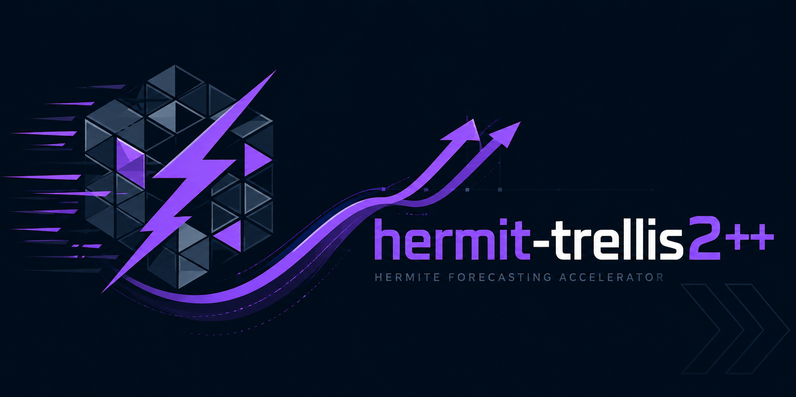
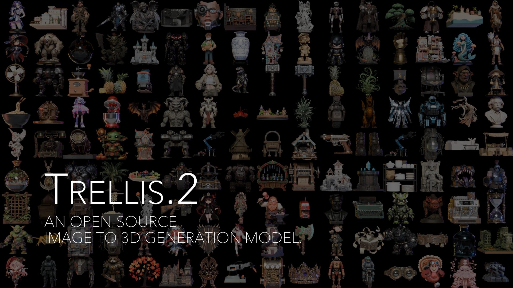
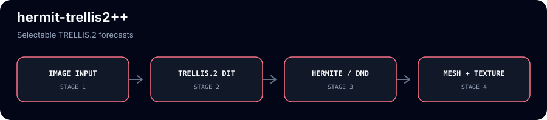

Selectable Hermite or DMD forecast for TRELLIS.2 image-to-3D
hermit-trellis2++ is TRELLIS.2-4B image-to-3D with the same training-free carved-hybrid as hermit-trellis2 — but with the sparse-structure velocity forecast on an exponential Dynamic-Mode-Decomposition (DMD/Prony) basis instead of the Hermite polynomial. It forecasts the model's final CFG-combined velocity and carves the structured-latent tokens, with the weights, decoders, and the full 1024_cascade mesh + texture left untouched.
git clone https://github.com/Archerkattri/hermit-trellis2-plus-plus cd hermit-trellis2-plus-plus # TRELLIS.2 runtime deps (torch, flash-attn, spconv/flex_gemm, o-voxel, cumesh, # nvdiffrast) per microsoft/TRELLIS.2. Place / symlink weights at ckpts/TRELLIS.2-4B. from trellis2.pipelines import Trellis2ImageTo3DPipeline from PIL import Image pipe = Trellis2ImageTo3DPipeline.from_pretrained("ckpts/TRELLIS.2-4B").to("cuda") pipe.enable_faster("dmd") # carved-hybrid, exponential DMD forecast out = pipe.run(Image.open("input_rgba.png"), pipeline_type="1024_cascade") mesh = out[0]
01
Evidence
| Deployed schedule F1 mean (DMD) | 0.900 — Toys4K mesh F-score@0.05, matched n=36, interval 2 (~1.9×) |
|---|---|
| Deployed schedule F1 median (DMD) | 0.960 — Toys4K mesh F-score@0.05, matched n=36, interval 2 |
| Deployed schedule speedup (DMD) | 1.89× — matched n=36 at GF_HICACHE_SS_INTERVAL=2 |
| Interval-3 F1 mean (DMD vs Hermite) | 0.872 vs 0.836 (+0.036) — matched n=35 |
| Interval-4 F1 mean (DMD vs Hermite) | 0.868 vs 0.839 (+0.029, median +0.037) — matched n=35 |
| CPU sampler/contract tests | 5 passed — cache lifecycle, backend selection, no model quality |
02
Media


03
Install & verify
python -m pytest tests/ -q # expect 5 passed (CPU contract tests) python tests/test_hicache_contract.py # standalone runner, prints [PASS] x5
04
Limits
What this release does not claim (from the release notes):
- GPU speedup validation and weight-gated demo cells.
05
Family
| Base model | TRELLIS.2, accelerated by the hicache-plus-plus forecast core |
|---|---|
| Same base | fast-trellis2 · hermit-trellis2 |
| All 13 adapters | TRELLIS: faster-trellis, faster-trellis-plus-plus · TRELLIS.2: fast-trellis2, hermit-trellis2, hermit-trellis2-plus-plus · Hunyuan3D-2: hunyuan2-plus, hunyuan2-plus-plus · Hunyuan3D-2.1: hunyuan2.1-plus, hunyuan2.1-plus-plus · SAM: sam3d-plus, sam3d-plus-plus, fastsam3d-plus, fastsam3d-plus-plus |